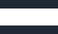

Issue 6 · Leadership
Bridge roles need to die
They let us ignore the real problems.
Hello. I've been quiet for a while. Two kids and a full time job will do that. But one theme kept surfacing last year that I couldn't shake and I've been wanting to write it down for a while.
Bridge roles need to die. Not because the problem(s) they solve don't matter. Coordination, alignment and cross functional working matter more than ever, but because these roles have become the sticking plaster we reach for instead of doing the harder work: restructuring teams, aligning incentives, building shared goals.
A significant number of the people I coach are in what we commonly called bridge roles. The jobs that sit between editorial and product; marketing and data, translating jargon, managing friction, trying to make goals shared.
We keep creating jobs that exist to stand in the gap between editorial and product, and then we wonder why the gap never closes.
Nick Petrie / WNMP
The important question then becomes: how do we build better infrastructure? Bridge-type roles might be part of a transition, but they should be time-limited secondments with off-boarding plans.
Consider thisWe should actively plan how to retire such roles while we're creating them.
What we really need are town planners for organisations: people thinking about how teams connect, what creates a better product for customers, what structures need to exist to lower coordination costs. Not another bridge, but proper foundations.
Just before Christmas Joanna Geary got together a fantastic group of speakers to share the interesting projects they are working on, and at the same time she hit upon a big problem: the hacks/hackers, open source, rising-tide-lifts-all-boats attitude of the 2010s has faded away. I was sad to miss it.
If you are looking for support and development, I have space for new sessions. Pay what you can.

What are you seeing?
Can you point me at examples where people and orgs are solving these problems?
Reply to Nick →